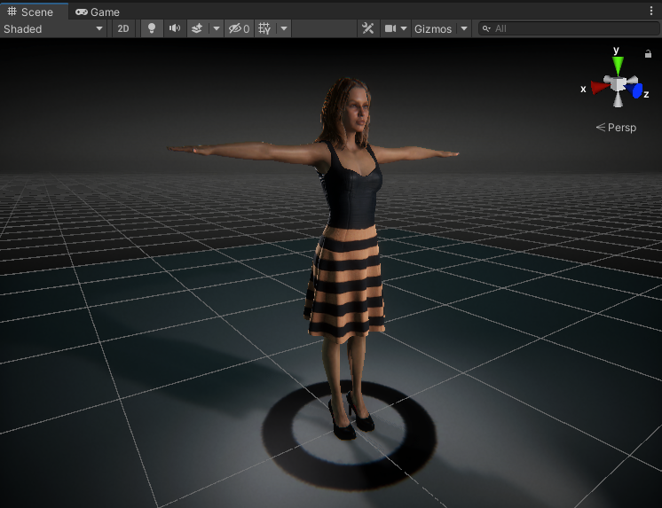

About¶
Welcome to the Unity import and auto setup tool for Character Creator 3 and iClone 7 from Reallusion.
This is a fully featured tool to take exports from CC3/iClone and set them up in Unity with complete visual fidelity.
The tool can produce characters of the highest visual quality using custom Shader graph shaders. Additionally, more performance focussed characters can be produced using simpler shaders with a minimal loss of visual quality.
How it works¶
Character exports from CC3 and iClone can be dragged into Unity, the import tool can then be opened and the character processed with a single click.
For full details of the workflow, see the Usage section of this documentation.
Obtaining the Tool¶
The tool can be installed using Unity’s internal package manager from either the Stable branch of this git repository or via download of the .zip of the latest release.
This process is discussed in detail in the Installation section of this documentation.
Removal
Unity’s internal package manager allows the simple and safe removal of the tool.
Updating
Simply remove the existing tool as above and install the latest version.